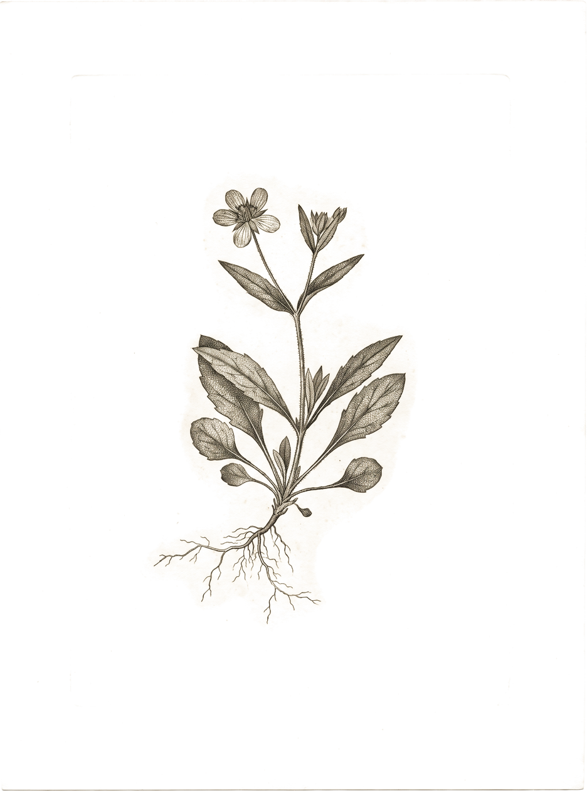

Ask Momentum
01
You don’t think about
finding a plumber.
Ask Momentum
02
You just search.
Ask Momentum
03
Getting found
should feel
that natural.
Ask Momentum
04
Ask Momentum anything…
should I raise my Google Ads budget?
Not this month.
Your top campaign is capped by conversion rate, not budget.
Fix the landing page first — I’d rather spend $400 there than $400 more on clicks.
Momentum
Ask Momentum
05
Then most of it,
handled.



This month
Calls
Forms
Named leads matched
Illustrative.